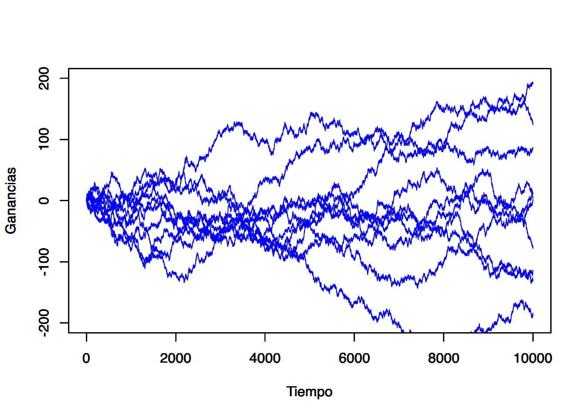

![]()

Notas de Clase Series de Tiempo
Descubre cómo seleccionar hardware, descargar la imagen ISO y preparar los medios de instalación. Exploraremos opciones para probar o instalar Linux en tu equipo.
Informática
Tecnología
Sistemas Operativos
Linux
Únete a esta emocionante serie de introducción a Linux, donde te guiaré a través de los pasos para descargar e instalar GNU/Linux en tu equipo. Aprenderás a seleccionar el hardware adecuado, descargar la imagen ISO de tu distribución preferida y preparar los medios de instalación. Además, exploraremos diferentes opciones para probar o instalar Linux. ¡Embárcate en esta aventura y descubre el poder de GNU/Linux!
Modelos de Series de Tiempo Estacionarias
Definición de ergodicidad y estacionariedad
A partir de esta sección introduciremos mayor formalidad matemática al análisis, por ello cambiaremos de notación y ocuparemos a \(X_t\) en lugar de \(Z_t\). Con \(X_t\) denotaremos a una serie de tiempo, ya que con \(Z_t\) denotareemos a una variable, sin que ella fuera necesariamente una serie de tiempo. Asimismo, iniciaremos por establecer una serie de definiciones. De esta forma, definiremos a una serie de tiempo como un vector de variables aleatorias de dimensión \(T\), dado como:
\[ X_1, X_2, X_3, \ldots ,X_T \]
Cada una de las \(X_t\) (\(t = 1, 2, \ldots, T\)) consideradas como una variable aleatoria. Así, también podemos denotar a la serie de tiempo como: \[ \{ X_t \}^T_{t = 1} (\#eq:Serie) \]
Es decir, definiremos a una serie de tiempo como una realización de un proceso estocástico –o un Proceso Generador de Datos (PGD). Consideremos una muestra de los múlples posibles resultados de muestras de tamaño \(T\), la colección dada por: \[ \{X^{(1)}_1, X^{(1)}_2, \ldots, X^{(1)}_T\} \]
es una de las tantas posibles resultantes del proceso estocástico o PGD. Eventualmente podríamos estar dispuestos a observar este proceso indefinidamente, de forma tal que estemos interesados en observar a la secuencia dada por \(\{ X^{(1)}_t \}^{\infty}_{t = 1}\), lo cual no dejaría se ser sólo una de las tantas realizaciones o secuencias del proceso estocástico original.
Tan solo para poner un ejemplo, podríamos observar las siguientes realizaciones del mismo PGD: \[\begin{eqnarray*} & \{X^{(2)}_1, X^{(2)}_2, \ldots, X^{(2)}_T\} & \\ & \{X^{(3)}_1, X^{(3)}_2, \ldots, X^{(3)}_T\} & \\ & \{X^{(4)}_1, X^{(4)}_2, \ldots, X^{(4)}_T\} & \\ & \vdots & \\ & \{X^{(j)}_1, X^{(j)}_2, \ldots, X^{(j)}_T\} & \end{eqnarray*}\]
Donde \(j \in \mathbb{Z}\). En lo subsecuente, diremos que una serie de tiempo es una realización del proceso estocástico subyacente. Considerando, en consecuencia, al proceso estocástico con todas sus posibilidades de realización.
Para hacer más sencilla la notación no distinguiremos entre el proceso en sí mismo y una de sus realizaciones, es decir, siempre escribiremos a una serie de tiempo como la secuencia mostrada en la ecuación @ref(eq:Serie), o más precisamente como la siguiente realización: \[ \{ X_1, X_2, \ldots, X_T \} \]
O simplemente: \[ X_1, X_2, \ldots, X_T \]
El proceso estocástico de dimensión \(T\) puede ser completamente descrito por su función de distribución multivaraida de dimensión \(T\). No obstante, esto no resulta ser práctico cuando se opere más adelante en el curso. Por ello, en el curso, y en general casi todos los textos lo hacen, sólo nos enfocaremos en sus primer y segundo momentos, es decir, en sus medias o valores esperados: \[\begin{equation*} \mathbb{E}[X_t] \end{equation*}\]
Para \(t = 1, 2, \ldots, T\); o: \[\begin{equation*} \left[ \begin{array}{c} \mathbb{E}[X_1] \\ \mathbb{E}[X_2] \\ \vdots \\ \mathbb{E}[X_T] \end{array} \right] \end{equation*}\]
o, \[\begin{equation*} \left[ \begin{array}{c} \mathbb{E}[X_1], \mathbb{E}[X_2], \ldots, \mathbb{E}[X_T] \end{array} \right] \end{equation*}\]
De sus variazas: \[\begin{equation*} Var[X_t] = \mathbb{E}[(X_t - \mathbb{E}[X_t])^2] \end{equation*}\]
Para \(t = 1, 2, \ldots, T\), y de sus \(T(T-1)/2\) covarianzas: \[\begin{equation*} Cov[X_t,X_s] = \mathbb{E}[(X_t - \mathbb{E}[X_t])(X_s - \mathbb{E}[X_s])] \end{equation*}\]
Para \(t < s\). Por lo tanto, en la forma matricial podemos escribir lo siguiente: \[\begin{equation*} \left[ \begin{array}{c c c c} Var[X_1] & Cov[X_1,X_2] & \cdots & Cov[X_1,X_T] \\ Cov[X_2,X_1] & Var[X_2] & \cdots & Cov[X_2,X_T] \\ \vdots & \vdots & \ddots & \vdots \\ Cov[X_T,X_1] & Cov[X_T,X_2] & \cdots & Var[X_T] \\ \end{array} \right] \end{equation*}\]
\[ = \left[ \begin{array}{c c c c} \sigma_1^2 & \rho_{12} & \cdots & \rho_{1T} \\ \rho_{21} & \sigma_2^2 & \cdots & \rho_{2T} \\ \vdots & \vdots & \ddots & \vdots \\ \rho_{T1} & \rho_{T2} & \cdots & \sigma_T^2 \\ \end{array} \right] (\#eq:MATCOV) \]
Donde es claro que en la matriz de la ecuación @ref(eq:MATCOV) existen \(T(T-1)/2\) covarianzas distintas, ya que se cumple que \(Cov[X_t,X_s] = Cov[X_s,X_t]\), para \(t \neq s\).
A menudo, esas covarianzas son denominadas como autocovarianzas puesto que ellas son covarianzas entre variables aleatorias pertenecientes al mismo proceso estocástico pero en un momento \(t\) diferente. Si el proceso estocástico tiene una distribución normal multivariada, su función de distribución estará totalmente descrita por sus momentos de primer y segundo orden.
Ahora introduciremos el concepto de ergodicidad, el cual indica que los momentos muestrales, los cuales son calculados en la base de una serie de tiempo con un número finito de observaciones, en la medida que \(T \rightarrow \infty\) sus correspondientes momentos muestrales, tienden a los verdaderos valores poblacionales, los cuales definiremos como \(\mu\), para la media, y \(\sigma^2_X\) para la varianza.
Este concepto sólo es cierto si asumimos que, por ejemplo, el valor esperado y la varianza son como se dice a continuación para todo \(t = 1, 2, \ldots, T\): \[\begin{eqnarray} \mathbb{E}[X_t] = \mu_t = \mu \\ \label{MEDIA} Var[X_t] = \sigma^2_X (\#eq:VARIANZA) \end{eqnarray}\]
Mas formalmente, se dice que el PGD o el proceso estocástico es ergódico en la media si: \[ \displaystyle\lim_{T \to \infty}{\mathbb{E} \left[ \left( \frac{1}{T} \sum^{T}_{t = 1} (X_t - \mu) \right) ^2 \right]} = 0 \]
y ergódico en la varianza si: \[ \displaystyle\lim_{T \to \infty}{\mathbb{E} \left[ \left( \frac{1}{T} \sum^{T}_{t = 1} (X_t - \mu) ^2 - \sigma^2_X \right) ^2 \right]} = 0 \]
Estas condiciones se les conoce como propiedades de consistencia para las variables aleatorias. Sin embargo, éstas no pueden ser probadas. Por ello se les denomina como un supuesto que pueden cumplir algunas de las series. Más importante aún: un proceso estocástico que tiende a estar en equilibrio estadístico en un orden ergódico, es estacionario.
Podemos distinguir dos tipos de estacionariedad. Si asumimos que la función común de distribución del proceso estocástico no cambia a lo largo del tiempo, se dice que el proceso es estrictamente estacionario. Como este concepto es dificil de aplicar en la práctica, solo consideraremos a la estacionariedad débil o estacionariedad en sus momentos.
Definiremos a la estacionariedad por sus momentos del correspondiente proceso estocástico dado por \(\{X_t\}\):
Estacionariedad en media: Un proceso estocástico es estacionario en media si \(E[X_t] = \mu_t = \mu\) es constante para todo \(t\).
Estacionariedad en varianza: Un proceso estocástico es estacionario en varianza si \(Var[X_t] = \mathbb{E}[(X_t - \mu_t)^2] = \sigma^2_X = \gamma(0)\) es constante y finita para todo \(t\).
Estacionariedad en covarianza: Un proceso estocástico es estacionario en covarianza si \(Cov[X_t,X_s] = \mathbb{E}[(X_t - \mu_t)(X_s - \mu_s)] = \gamma(|s-t|)\) es sólo una función del tiempo y de la distancia entre las dos variables aleatorias. Por lo que no depende del tiempo denotado por \(t\) (no depende de la información contemporánea).
Estacionariedad débil: Como la estacionariedad en varianza resulta de forma inmediata de la estacionariedad en covarianza cuando se asume que \(s = t\), un proceso estocástico es débilmente estacionario cuando es estacionario en media y covarianza. \end{enumerate}
Puesto que resulta poco factible asumir una estacionariedad diferente a la débil, es adelante siempre que digamos que un proceso es estacionario se referirá al caso débil y sólo diremos que el proceso es estacionario, sin el apelativo de débil.
Ahora veamos un ejemplo de lo anterior. Supongamos una serie de tiempo denotada por: \(\{U_t\}^T_{t = 0}\). Decimos que el proceso estocástico \(\{U_t\}\) es un o es un , si éste tiene las siguientes propiedades:En palabras. Un proceso \(U_t\) es un ruido blanco si su valor promedio es cero (0), tiene una varianza finita y constante, y además no le importa la historia pasada, así su valor presente no se ve influenciado por sus valores pasados no importando respecto de que periodo se tome referencia.
En apariencia, por sus propiedades, este proceso es débilmente estacionario –o simplemente, estacionario–. Todas las variables aleatorias tienen una media de cero, una varianza \(\sigma^2\) y no existe correlación entre ellas.
Ahora supongamos que definimos un nuevo proceso estocástico \(\{X_t\}\) como: \[ X_t = \left\{ \begin{array}{l} U_0 \mbox{ para } t = 0 \\ X_{t-1} + U_t \mbox{ para } t = 1, 2, 3, \ldots \end{array}\right. \]
Donde \(\{ U_t \}\) es un proceso puramente aleatorio. Este proceso estocástico, o caminata aleatoria sin tendencia (ajuste - drift), puede ser reescrito como: \[ X_t = \sum^t_{j = 0} U_j \]
Tratemos de dar más claridad al ejemplo, para ello asumamos que generamos a \(\{U_t\}\) por medio del lanzamiento de una moneda. Donde obtenemos una cara con una probabilidad de \(0.5\), en cuyo caso decimos que la variable aleatoria \(U_t\) tomará el valor de \(+1\), y una cruz con una probabilidad de \(0.5\), en cuyo caso decimos que la variable aleatoria \(U_t\) toma el valor de \(-1\).
Este planteamiento cumple con las propiedas enunciadas ya que:Retomando a nuestro proceso \(X_t\), diremos que el caso de \(X_0 = 0\), para \(t = 0\). Si verificamos cúales son sus primeros y segundos momentos de \(\{X_t\}\) tenemos: \[ \mathbb{E}[X_t] = \mathbb{E}\left[ \sum^t_{j=1} U_j \right] = \sum^t_{j=1} \mathbb{E}[U_j] = 0 \]
En cuanto a la varianza: \[\begin{eqnarray} Var[X_t] & = & Var \left[ \sum^t_{j=1} U_j \right] \nonumber \\ & = & \sum^t_{j=1} Var[U_j] + 2 * \sum_{j \neq k} Cov[U_j,U_k] \nonumber \\ & = & \sum^t_{j=1} 1 \nonumber \\ & = & t \end{eqnarray}\]
Lo anterior, dado que hemos supuesto que en la caminata aleatoria todas la variables aleatorias son independientes, es decir, \(Cov[U_t,U_s] = E[U_t \cdot U_s] = 0\). Por su parte, la covarianza del proceso estocástico se puede ver como: \[\begin{eqnarray*} Cov[X_t,X_s] & = & \mathbb{E} \left[ \left( \sum^t_{j=1} U_j - 0 \right) \left( \sum^s_{i=1} U_i - 0 \right) \right] \\ & = & \mathbb{E}[(U_1 + U_2 + \ldots + U_t)(U_1 + U_2 + \ldots + U_s)] \\ & = & \sum^t_{j=1} \sum^s_{i=1} \mathbb{E}[U_j U_i] \\ & = & \mathbb{E}[U^2_1] + \mathbb{E}[U^2_2] + \ldots + \mathbb{E}[U^2_k] \\ & = & \sigma^2 + \sigma^2 + \ldots + \sigma^2 \\ & = & 1 + 1 + 1 + 1 \\ & = & min(t,s) \end{eqnarray*}\]
Así, el proceso estocástico dado por la caminata alaeatoria sin un término de ajuste es estacionario en media, pero no en varianza o en covarianza, y consecuentemente, en general no estacionario, condición que contraria al caso del proceso simple descrito en \(U_t\).
Es facil ver que muchas de las posibilidades de realización de este proceso estocástico (series de tiempo) pueden tomar cualquiera de las rutas consideradas en el Figura @ref(fig:fig31).
Función de autocorrelación
Para ampliar la discusión, es posible calcular la fuerza o intensidad de la dependencia de las variables aleatorias dentro de un proceso estocástico, ello mediante el uso de las autocovarianzas. Cuando las covarianzas son normalizadas respecto de la varianza, el resultado es un término que es independiente de las unidad de medida aplicada, y se conoce como la .
Para procesos estacionarios, dicha función de autocorrelación esta dada por: \[ \rho(\tau) = \frac{\mathbb{E}[(X_t - \mu)(X_{t+\tau} - \mu)]}{\mathbb{E}[(X_t - \mu)^2]} = \frac{\gamma(\tau)}{\gamma(0)} \]
Donde \(\tau = \ldots, -2, -1, 0, 1, 2, \ldots\). Dicha función tiene las siguientes propiedades:Derivado de las propiedades 1 y 2 antes descritas se puede concluir que sólo es necesario conocer la función de autocorrelación para el caso de \(\tau = 1, 2, 3, \ldots\), ya que de estos casos podemos derivar los valores de la función de autocorrelación complementarios de \(\tau = \ldots, -3, -2, -1\).
Partiendo de los supuestos de ergodicidad en relación a la media, varianza y covarianzas de un proceso estacionario, podemos estimar dichos paramétros con las siguientes formulaciones o propuestas de estimadores puntuales: \[ \hat{\mu} = \frac{1}{T} \sum^T_{t=1} X_t \]
\[ \hat{\gamma}(0) = \frac{1}{T} \sum^T_{t=1} (X_t - \hat{\mu})^2 = \hat{\sigma}^2 \]
\[ \hat{\gamma}(\tau) = \frac{1}{T} \sum^{T - \tau}_{t=1} (X_t - \hat{\mu})(X_{t+\tau} - \hat{\mu}) \mbox{, para } \tau = 1, 2, \ldots, T-1 \]
No hacemos la demostración en estas notas –sería deseable que el alumno revisará la afimación– pero estos últimos son estimadores consistentes de \(\mu\), \(\gamma(0)\) y \(\gamma(\tau)\). Por su parte, un estimador consistente de la función de autocorrelación estará dado por: \[ \hat{\rho}(\tau) = \frac{\sum^{T - \tau}_{t=1} (X_t - \hat{\mu})(X_{t+\tau} - \hat{\mu})}{\sum^T_{t=1} (X_t - \hat{\mu})^2} = \frac{\hat{\gamma}(\tau)}{\hat{\gamma}(0)} \mbox{, para } \tau = 1, 2, \ldots, T-1 \label{Eq_AutoCorr} \]
El estimador de la ecuación (\(\ref{Eq_AutoCorr}\)) es asintóticamente insesgado. Por ejemplo, para el caso de un proceso de ruido blanco o caminata aleatoria, su varianza puede ser aproximada por el valor dado \(1/T\). Ésta tiene, asintóticamente, una distribución normal. Dado esto, el intervalo de confianza al \(95\%\) será el dado por \(\pm 2/\sqrt{T}\), en el cual se encuentra la mayoría de los coeficientes de autocorrelación estimados.
Ahora discutamos algunos ejemplos o aplicaciones. Cuando se realiza la evaluación de la estimación de un modelo de series de tiempo es importante saber si los residuales del modelo realmente tienen propiedades de un proceso puramente aleatorio, en partícular, si ellos no están correlacionados entre sí. Así, la hipotésis a probar será: \[ H_0 : \rho(\tau) = 0 \mbox{, para todo } \tau = 1, 2, \ldots, m \mbox{ y } m < T \]
Esta expresión se puede interpretar como una prueba respecto de si la correlación entre la información de periodos atrás es cero con la información contemporánea. Para hacer una pruena global de la hipotésis de sí un número \(m\) de coeficientes de autocovarianzas son cero Box y Pierce (1970) desarrollarón la siguiente estadística: \[ Q^* = T \sum_{j = 1}^{m} \hat{\rho} (j)^2 \]
Bajo la hipotésis nula esta estadística se distribulle asintóticamente como una chi cuadrado (\(\chi^2\)) con \(m-k\) grados de libertad y con \(k\) que representa al número de paramétros estimados.
Haciendo una aplicación estricta de la distribución de esta estadística, sabemos que esta se mantiene asintóticamente. Greta, Ljung y Box (1978) propusieron la siguiente modificación de la estadística para muestras pequeñas: \[ Q = T(T + 2) \sum_{j = 1}^{m} \frac{\hat{\rho} (j)^2}{T - j} \]
La cual también se distribulle asintóticamente como \(\chi^2\) con \(m-k\) grados de libertad.
También es intuitivamente claro que la hipótesis nula de no autocorrelación de residuales debería ser rechazada si alguno de los valores \(\hat{\rho} (j)\) es muy grande, es decir, si \(Q\) o \(Q^*\) es muy grande. O más precisamente, si estas estadísticas son más grandes que los correspondientes valores críticos de la distribución \(\chi^2\) con \(m-k\) grados de libertad a algún grado dado de signficancia.
Una alternativa para esta prueba es una del tipo Multiplicadores de Lagrange (o LM) desarrollada por Breusch (1978) y Godfrey (1978). La cual, al igual que las estadísticas \(Q\) y \(Q^*\), la hipotesis nula está dada por:La prueba consiste en realizar una regresión auxiliar en la cual los residuales se estiman en función de las variables explicativas del modelo original y en los residuales mismos pero rezagados hasta el término \(m\) (regresión auxiliar). La prueba resulta en una estadìstica con una distribución \(\chi^2\) con \(m\) grados de libertad la cual está dada por la expresión: \[ LM = T \times R^2 \]
Donde \(R^2\) es el resultante de la regresión auxiliar y \(T\) es el número de observaciones totales.
En comparación con una prueba Durbin - Watson que es comúnmente usada en la econometría tradicional, para probar autocorrelación de los residuales, las estadísticas \(Q\), \(Q^*\) y \(LM\) tienen las siguientes ventajas:El hecho de los residuales no estén autocorrelacionados no implica que estos sean independientes y normalmente distribuidos. La ausencia de autocorrelación no implica una independencia estocástica si las variables son normalmente distribuidas.
A menudo se asume que estos residuales están distribuidos normalmente, ya que la mayoría de las pruebas estadísticas tienen este supuesto detrás. No obstante, ello también depende de los otros momentos de la distribución, específicamente del tercer y cuarto momento. Los cuales expresan como: \[\begin{equation*} \mathbb{E}[(X_t - \mathbb{E}[X_t])^i] \mbox{, } i = 3, 4 \end{equation*}\]
El tercer momento es necesario para determinar el sesgo, el cual esta dado como: \[ \hat{S} = \frac{1}{T} \frac{\sum_{t = 1}^{T} (X_t - \hat{\mu})^3}{\sqrt{\hat{\gamma}(0)^3}} \]
Para distribuciones simetricas (como en el caso de la distribución normal) el valor teórico para el sesgo es cero.
La curtosis, la cual esta dada en función del cuarto momento, se puede expresar como: \[ \hat{K} = \frac{1}{T} \frac{\sum_{t = 1}^{T} (X_t - \hat{\mu})^4}{\hat{\gamma}(0)^2} \]
Para el caso de una distribución normal, esta estadística toma el valor de 3. Valores más grandes que 3 indican que la distribución tienen colas anchas. En tales casos se ubican a los datos financieros.
Usando el valor de las estadísticas para medir el sesgo y la curtosis, \(S\) y \(K\), respectivamente, Jarque y Bera (1980) propusieron una prueba de normalidad, la cual puede ser aplicada a series de tiempo en niveles o en diferencias indistintamente. Dicha prueba se expresa como: \[ JB = \frac{T}{6} \left(\hat{S} + \frac{1}{4} (\hat{K} - 3)^2 \right) \]
La cual tiene una distribución \(\chi^2\) con \(2\) grados de libertad y donde \(T\) es el tamaño de la muestra. La hipótesis de que las observaciones están distribuidas de forma normal se rechaza si los valores de la estadística de prueba es más grande que los correspondientes valores criticos en tablas.
Veamos un ejemplo para ilustrar el uso de la función de autocorrelación. Tomemos como variable al número de pasajeros transportados por el sistema de transporte del metro de la CDMX. Los datos empleados fueron tomados del INEGI y son una serie de tiempo en el periodo que va de enero de 2000 a junio de 2019, es decir, 234 observaciones. Como se puede apreciar en la Figura \(\ref{Pax_Metro}\), el número de pasajeros por mes ha oscilado significativamente a lo largo de tiempo. Incluso podemos observar un cambio estructural de la serie entre 2011 y 2012. Asimismo, podemos ubicar una caida atípica que ocurrió en septiembre de 2017. A esta serie de tiempo le calculamos los pincipales estadísticos hasta ahora estudiados y obtenemos el Cuadro \(\ref{Est_Pax}\). En dicho cuadro se destaca que se muestra la función de autocirrelación para los tres primeros rezagos. Para mayor detalle, en la Figura \(\ref{Correlograma}\) se muestra la función de autocorrelación, en donde las bandas descritas por las líneas azules son el intervalo de confianza desntro de las cuales no se puede rechazar la hipotésis nula de que \(H_0: \hat{\rho}(p) = 0\), para todo \(\tau = 1, 2, \ldots, T-1\).achalmaedison - Notas de Clase Series de Tiempo achalmaedison - Notas de Clase Series de Tiempo achalmaedison - Notas de Clase Series de Tiempo achalmaedison Únete a esta emocionante serie de introducción a Linux, donde te guiaré a través de los pasos para descargar e instalar GNU/Linux en tu equipo. Aprenderás a seleccionar el hardware adecuado, descargar la imagen ISO de tu distribución preferida y preparar los medios de instalación. Además, exploraremos diferentes opciones para probar o instalar Linux. ¡Embárcate en esta aventura y descubre el poder de GNU/Linux! Únete a esta emocionante serie de introducción a Linux, donde te guiaré a través de los pasos para descargar e instalar GNU/Linux en tu equipo. Aprenderás a seleccionar el hardware adecuado, descargar la imagen ISO de tu distribución preferida y preparar los medios de instalación. Además, exploraremos diferentes opciones para probar o instalar Linux. ¡Embárcate en esta aventura y descubre el poder de GNU/Linux!